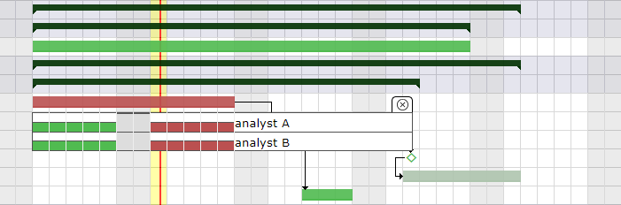
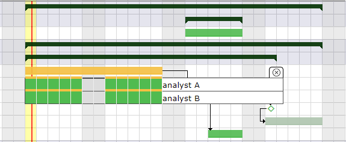
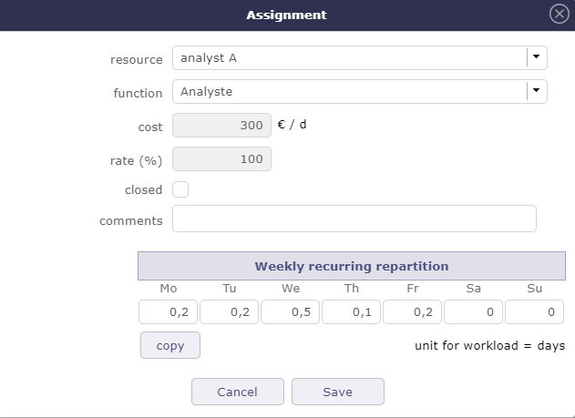
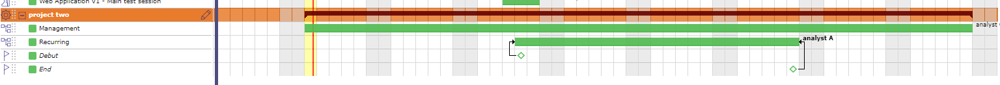
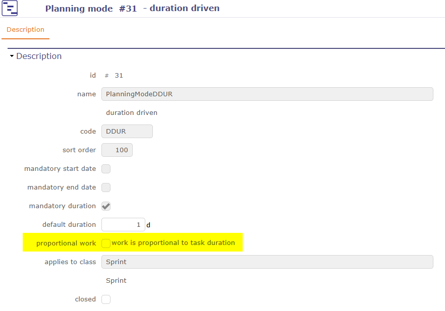

La planification de projet est d’une importance capitale pour assurer le succès de votre objectif.
En assurant une gestion optimale des coûts, des délais et de la qualité, la planification de projet vous permet d’estimer les Ressources nécessaires, d’établir un calendrier réaliste et de définir les indicateurs de performance attendus. En l’absence de planification, vous exposez votre projet à des risques de pertes financières, de retards et d’une qualité insuffisante.
ProjeQtOr offre un large choix de leviers de contrôle pour planifier au mieux votre projet dans des conditions précises.
La planification est calculée de la manière la plus simple possible. Cela signifie qu’aucun algorithme complexe n’est appliqué.
Le principe adopté est simplement de pouvoir reproduire ce que vous pourriez faire avec un tableur, mais cette fois de manière automatique.
Tout le travail non réalisé est planifié, de la date de début jusqu’à la date maximale en fonction de la charge assignée au(x) projet(s).
Avec la version 12.0, l’ordre de planification a été repensé et optimisé afin de fournir une logique plus cohérente et une précision accrue.
Important
Ces modifications de l’ordre de planification n’auront pas d’impact sur votre planning existant. En effet, seules les nouvelles instances installées après la version 12 bénéficieront automatiquement de cette nouvelle organisation.
Pour les versions précédentes et les mises à jour depuis la v12.0, vous devrez choisir l’option qui vous convient le mieux dans les paramètres.
Le WBS (Work Breakdown Structure), c’est-à-dire la structure ou l’ordonnancement de votre planning, est planifié en premier si aucune autre contrainte ne vient perturber cet ordre. Il est lu de haut en bas et de gauche à droite.
La date de fin validée
Il est possible de définir la priorité par défaut des Activités à partir de la date de fin saisie avant l’ordre dans la structure WBS.
Cela donnera une priorité plus élevée aux Activités qui doivent se terminer plus tôt, indépendamment du WBS.
La date de fin planifiée est par défaut la date de fin validée.
Si la date de fin validée n’est pas définie, la date de fin planifiée peut être récupérée depuis un successeur (par ex. un Jalon de fin) ou depuis le parent.
Lorsque la date de fin est récupérée, elle est affichée en rose et écrite en italique gris.
La barre est également affichée en rose.
Si deux Activités ont la même date de fin planifiée, le WBS est toujours le dernier critère de priorité.
Cette fonctionnalité peut être désactivée dans les paramètres globaux pour n’utiliser que les critères WBS par défaut.
Priorités des Activités
Toutes les Activités avec la valeur de priorité la plus basse seront potentiellement planifiées en premier.
Important
La priorité des Activités avant la version 12.0 était inter-projet.
Après la version 12.0 avec les nouvelles règles de planification activées, la priorité des Activités est intra-projet.
Priorités des projets
La valeur la plus petite (index) est calculée en premier, ce qui signifie notamment que si les projets ont des priorités différentes, toutes les Activités du projet avec la valeur de priorité la plus petite seront potentiellement planifiées en premier.
Modes de planification
Avant la v12.0, les modes « F.D.C.DUR », « STARR », « REGUL, FULL, HALF et QUART » et le mode « RECW » sont des modes prioritaires par rapport aux autres modes de planification des Activités, à l’exception de la planification manuelle.
Après la v12.0 avec le nouveau mode de planification, les modes F.D.C.DUR ne sont plus prioritaires.
Dépendances
Si une Activité ou un projet possède un prédécesseur, ce dernier est toujours planifié en premier.
Réunions
Elle est fixée à une date donnée, même si tous les participants ne sont pas disponibles.
Dans ce cas, une alerte vous informe et le diagramme de Gantt affiche l’indisponibilité.
Planification manuelle et interventions planifiées
Ce mode de planification est le plus prioritaire. La charge de travail assignée avec ce mode de planification peut être enregistrée en travail planifié ou en travail réel.
ProjeQtOr offre plusieurs façons de planifier la charge de travail de vos Ressources grâce aux modes de planification.
L’ordre des modes de planification n’est pas aléatoire.
Plus vous descendez dans la liste, plus les modes de planification sont prioritaires et reprendront la charge sur les Tâches pouvant être planifiées dans les modes de planification précédents.
Certains modes de planification sont réservés aux utilisateurs experts.
Si vous ne souhaitez pas conserver les modes que vous n’utilisez pas, vous pouvez utiliser l’écran dédié qui vous permettra de fermer et donc de masquer certains modes.
Lorsque deux Ressources ou plus sont assignées à la même Tâche, la planification tente de trouver des périodes durant lesquelles toutes les Ressources sont disponibles pour travailler ensemble.
Les périodes sont recherchées « dès que possible ».
Si une seule Ressource est assignée, ce mode de planification est exactement identique à « Dès que possible ».
Si une Ressource se voit assigner plus de travail que l’autre, le travail supplémentaire est planifié après les périodes de travail en commun.
Mode de planification Travailler ensemble : le calcul planifiera les Ressources simultanément et dès qu’un créneau disponible est trouvé.¶
La Tâche est planifiée par durée. Le champ Durée validée est obligatoire. Si vous ne le renseignez pas, il sera automatiquement défini à 1.
Si du travail est assigné à la Tâche, le comportement de planification est identique à celui du mode « Régulier entre les dates ».
Possibilité de réajuster (date de début et de fin) la Tâche à l’aide des poignées directement sur la barre de la vue Gantt.
Lorsque le nombre de jours de travail assignés dépasse la durée indiquée, les jours (détail des barres Gantt) suivant la date de fin validée de l’Activité apparaîtront en rouge.
Le coût réel est calculé sur la base du coût validé.
Par exemple : CHARGE VALIDÉE est de 40 - COÛT VALIDÉ est de 10 000 ;
Je renseigne l’avancement à 20 % ; la charge de travail réalisée est de 8 -> le coût réel calculé qui devrait être inscrit est 2000, mais le champ reste vide pour le moment.
Mode de planification Durée fixe avec charge de travail¶

Mode de planification Durée fixe avec charge de travail et date de fin validée < date de fin planifiée¶
Si une charge de travail est saisie pour une Ressource sur une Activité parente, et que cette Ressource est également planifiée sur des Activités enfants, le total de cette charge sera affiché sur l’Activité parente pour cette Ressource.
La section dates et durées de l’Activité affiche la charge globale pour une Ressource.
20 jours de charge = 10 jours de charge pour l’Analyste A sur l’Activité parente + 10 jours de charge pour l’Analyste A sur l’Activité A.
L’Activité mère, même si elle est prioritaire par rapport à sa position dans le WBS, répartira la charge de travail assignée à la Ressource après la charge des sous-Activités.
La charge de l’Activité mère est planifiée après les sous-Activités¶
La Tâche est planifiée par durée fixe. Si vous ne la renseignez pas, elle sera automatiquement définie à 1.
Si l’Affectation des Ressources dépasse la durée validée définie, la répartition du travail restant devient une sursollicitation.
Lorsque la charge de travail assignée ne dépasse pas le nombre de jours de durée fixe, le mode de planification répartit la charge de travail en la lissant sur toute la durée, exactement comme avec la durée fixe ou le mode régulier entre deux dates.
En mode de calcul automatique, seule l’Activité dans ce mode sera recalculée.
Les autres Activités, même celles pilotées par des dépendances, ne seront recalculées qu’avec la fonction de calcul complet.
Possibilité de réajuster et déplacer la Tâche (poignées de chaque côté de la barre) directement sur le Gantt.
Avec la poignée gauche, vous ajustez toute la barre sans modifier la durée.

Mode de planification Piloté par la durée : le travail qui dépasse la durée est calculé comme une sursollicitation.¶
Ce mode de planification se comporte de manière similaire aux modes « Durée fixe » et « Piloté par la durée » avec quelques spécificités supplémentaires.
Le champ Durée validée est obligatoire. Si vous ne le renseignez pas, il sera automatiquement défini à 1.
Ce mode est prioritaire par rapport au mode « Dès que possible » ou « Travailler ensemble ».
Il offre la possibilité de décaler la date de début validée et la date de fin à l’aide des poignées de chaque côté de la barre.
Le déplacement de la date de début fixe la date de début validée sans affecter la durée de la Tâche planifiable.
Le déplacement de la date de fin calcule automatiquement la durée.
Pas de Surbooking au sein du même projet.
Surbooking inter-projets possible.
Respect de l’Affectation et du taux d’Assignation par projet et par Activité.
Indication de la date de début par une ligne rouge¶
Si la date de début est spécifiée, la Tâche prend la priorité sur celles de même priorité qui n’en ont pas.
Lorsque la date de début est saisie mais non respectée, la barre devient rouge et une ligne rouge s’affiche à la base de la ligne pour indiquer la durée de la dérive (date de début validée ou date de fin du/des prédécesseur(s)).
Si la durée n’est pas respectée, la Tâche est rouge.
Ne doit pas commencer avant la date de début validée¶
Le champ Date de début validée doit être renseigné.
La Tâche ne doit pas commencer avant une date spécifique.
Si une contrainte plus forte, telle que des dépendances ou du travail réel, est spécifiée, le mode de planification ne sera plus respecté.
Vous pouvez bloquer les imputations des Ressources dans ce mode de planification en activant le paramètre global « verrouiller les Imputations avant la date de début validée » dans les paramètres globaux
Le champ Date de début validée doit être renseigné.
La Tâche ne doit pas commencer avant cette date spécifique.
Ce mode de planification récupère du temps sur les modes de planification précédents.
Il est prioritaire sur les modes « Dès que possible », « Durée fixe » et « Travailler ensemble ».
La date de début n’est plus respectée si une contrainte plus forte, telle que des dépendances ou du travail réel, est spécifiée.
Vous pouvez bloquer les imputations des Ressources dans ce mode de planification en activant le paramètre global « verrouiller les Imputations avant la date de début validée » dans les paramètres globaux
Si les dates sont trop courtes par rapport à la charge assignée, la charge excédentaire sera divisée et ajoutée de la même manière que le mode choisi.
Vous pouvez ainsi obtenir des journées entières même en mode régulier en quarts de journée ou en demi-journées.
Exemple avec 8 jours de charge de travail à planifier sur 10 jours avec le mode Régulier en demi-journées entre les dates.
La charge est répartie régulièrement de manière à respecter les dates.
Si la charge est trop élevée pour respecter les dates, la charge excédentaire sera répartie sur toute la journée après la date de fin validée et sera donc en retard (couleur rouge).
Ce mode vous permet de planifier la charge de travail sur une base hebdomadaire qui sera répartie chaque semaine, par exemple 1/2 journée chaque lundi, 1 heure par jour, etc.
Il s’adapte automatiquement aux éléments qui déterminent la durée totale du projet. Si le projet prend du retard, ce mode continuera à s’adapter et répartira automatiquement la charge pour chaque jour ajouté.
Astuce
Veuillez noter que le projet n’est qu’une enveloppe ; ce sont les éléments qui le composent qui en détermineront la durée. Une Activité récurrente ne peut pas être calculée correctement si elle est le seul composant du projet, même si elle possède des dates validées. D’autres éléments (Activités, Jalons, etc.) seront nécessaires pour que la répartition de cette charge soit effectuée correctement.
Cliquez sur pour saisir la charge pour chaque jour de la semaine.
Le travail est réparti dynamiquement selon la charge indiquée dans le tableau d’Assignation.

Mode de planification en quarts de journée : les jours assignés sont répartis uniformément en quarts de journée.¶
Si vous ne souhaitez pas que l’Activité récurrente s’adapte au projet, vous pouvez la limiter entre des Jalons Fin-Début et Fin-Fin.

Mode de planification en quarts de journée : les jours assignés sont répartis uniformément en quarts de journée.¶
La zone d’affichage vous permet de filtrer les Ressources que vous souhaitez afficher.
L’écran est vide jusqu’à ce que vous sélectionniez la Ressource, l’équipe ou l’organisation.
Le calendrier est affiché pour la Ressource ou pour tous les membres de l’équipe ou de l’organisation sélectionnée.
Ces paramètres ne sont pas exclusifs, vous pouvez sélectionner une équipe et une organisation.
Ressource : filtrer par Ressource dans l’affichage du calendrier.
Équipe : filtrer par équipe dans l’affichage du calendrier.
Organisation : filtrer par organisation dans l’affichage du calendrier.
Projet : filtrer par projet dans l’affichage du calendrier.
Année : sélectionner l’année à afficher.
Mois : sélectionner le mois à afficher.
Masquer les éléments terminés : vous pouvez masquer les Activités enregistrées à l’état « terminé » dans la liste affichée.
Note
Les paramètres sélectionnés, à l’exception du mois toujours défini par défaut sur le mois en cours, sont enregistrés en tant que paramètre utilisateur.
Lorsque l’utilisateur revient sur l’écran, il retrouve ainsi les derniers paramètres saisis.
Liste des projets et des Activités
La liste des Activités affichées est en mode de planification « planification manuelle ». Si aucun filtre n’est sélectionné (projet, Ressource, organisation …), l’écran n’affiche aucune donnée.
Vous ne pouvez pas créer de nouvelles Activités en mode de planification manuelle depuis l’écran des interventions. Vous devez accéder à l’écran des Activités ou du planning pour créer la nouvelle Activité en mode de planification manuelle. La nouvelle Activité apparaîtra ensuite dans la liste.
Cliquez sur pour accéder à l’écran de l’Activité et consulter son détail.
ETP
Dans ce calendrier, nous affichons graphiquement si la quantité de personnes demandée sur l’Activité et sur la demi-journée est respectée.
Saisissez une valeur entière pour chaque Activité à contrôler.
Si vous saisissez 1, vous attendez qu’au moins une personne effectue une demi-journée sur cette Activité.
Un contrôle est alors effectué et prend en compte toutes les Ressources assignées à chaque Activité, et non uniquement celles sélectionnées et visibles dans le calendrier.
Si le champ est laissé vide ou à 0, aucun contrôle n’est effectué et le calendrier n’affichera aucune case verte ou rouge.
La case devient alors rouge : la charge de travail est supérieure à ce qui était attendu, puisqu’une seule personne était prévue sur cette demi-journée et sur cette Activité.
Case non colorée
Il n’y a aucune charge de travail attendue.
Mode d’intervention
La liste des modes d’intervention possibles est personnalisable.
Cette liste peut être modifiée via un écran de paramétrage dans la liste des valeurs.
Les modes enregistrés resteront fixes pour tous les projets et toutes les équipes.
Lorsque cette valeur est définie, l’Activité ne sera planifiée que les jours où la disponibilité journalière est supérieure ou égale à ce seuil.
Vous avez également la possibilité d’ajouter une nouvelle propriété à une Tâche « ne pouvant pas être fractionnée ».
Cela nécessitera de définir le travail minimum à allouer chaque jour et donc de renseigner le champ seuil minimum.
Soyez vigilant avec ce mode : la planification nécessitera de trouver des jours consécutifs avec au moins la valeur donnée possible, ce qui peut ne jamais arriver.
Par défaut, le calcul de planification s’effectue sans sursollicitation ; lorsque plusieurs Activités sont assignées à la même Ressource, ProjeQtOr les planifie séquentiellement.
Une Ressource ne peut pas travailler plus d’une journée entière par jour, et le moteur de planification applique cette contrainte.
Comme illustré dans l’exemple ci-dessous, étant donné que la même Ressource est assignée à plusieurs Activités, ces Tâches sont automatiquement étalées dans le temps.
Elles sont planifiées les unes après les autres, permettant à la Ressource de les réaliser à son propre rythme et dans les limites de sa capacité.
La Ressource est alors autorisée à dépasser sa capacité de travail journalière.
Dans ce cas, la même Ressource peut être planifiée sur plusieurs Activités simultanément, même si la charge de travail totale dépasse une journée.
En d’autres termes, ProjeQtOr permet à la Ressource de « travailler deux jours en un », ce qui peut être utile pour des simulations, des scénarios de Surbooking intentionnel ou pour identifier la criticité d’une Ressource.
Cette méthode permet la sursollicitation inter-projets.
Cette option vous permet de définir le calcul de la charge de travail proportionnellement à la durée de la Tâche.
Le taux est alors utilisé non pas pour limiter la répartition de la charge de travail pour la Ressource, mais pour la calculer.
Cette option est disponible dans les Assignations pour les modes de planification qui utilisent la durée comme levier principal de répartition de la charge de travail.
Un mécanisme permettra de définir ce mode au niveau du mode de planification à l’aide d’un paramètre « charge proportionnelle à la durée ».
Si cette option est activée, lors de la création d’une Assignation pour ce type d’Activité, l’option sera automatiquement sélectionnée sur l’Assignation.
Ce paramètre s’applique uniquement aux nouvelles Assignations ; il n’affectera pas les modifications d’Assignation ni les Assignations existantes lorsque le mode de planification de l’Activité est modifié.

Lorsque vous sélectionnez le travail proportionnel, une icône s’affiche dans le tableau pour indiquer que l’option est activée.
La date de début est déterminée. Par défaut, la date de début planifiée de l’Activité.
Sinon, la date de début validée.
Si aucune date de début n’est trouvée, ou si cette date de début est antérieure à aujourd’hui, la date de début est aujourd’hui.
La date de fin est déterminée. Par défaut, la date de fin la plus tardive de toutes les Assignations de l’Activité qui ne sont pas en mode proportionnel.
Si aucune autre Assignation n’est en mode non proportionnel, la date de fin planifiée de l’Activité.
Sinon, la date de fin validée de l’Activité.
Si aucune date de fin n’est trouvée, mais que l’Activité possède une durée validée, la date de fin est établie comme la date de début + durée (calculée en jours ouvrés sur le calendrier du projet de l’Activité).
Le temps disponible pour la Ressource (selon son calendrier) est calculé entre la date de début et la date de fin.
Si aucune date de début ou de fin n’est spécifiée, la durée est définie à 1 par défaut.
Important
Les périodes d’absence (effectives pour les projets administratifs) sont déduites du temps disponible.
La charge de travail restante est calculée :
Pour une Ressource : [Charge restante] = [Temps disponible] x [Taux d’Assignation]
Pour les pools : [Temps disponible] x [Taux d’Assignation] x [ETP]
Règle de calcul de la charge de travail assignée
Pour ce type d’Assignation, tant que l’Activité n’est pas à l’état démarré (handled=0) :
[Charge assignée] = [Charge restante]
Après (handled=1), la charge de travail assignée n’est plus mise à jour.
Note
Le calcul de la charge de travail restante ne tient pas compte de l’utilisation de la Ressource sur d’autres Activités et/ou projets.
Par conséquent, la planification de cette charge de travail peut entraîner une extension de la durée de l’Activité.


 pour saisir la charge pour chaque jour de la semaine.
pour saisir la charge pour chaque jour de la semaine.
 pour accéder à l’écran de l’Activité et consulter son détail.
pour accéder à l’écran de l’Activité et consulter son détail.


 et cochez la case « Planifier avec sursollicitation (capacité de Surbooking infinie) » pour calculer la planification.
et cochez la case « Planifier avec sursollicitation (capacité de Surbooking infinie) » pour calculer la planification.


 pour ajouter une ligne
pour ajouter une ligne pour ajouter 10 lignes
pour ajouter 10 lignes